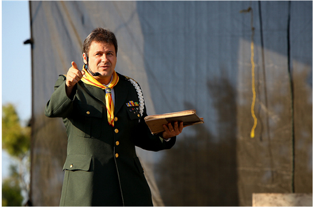
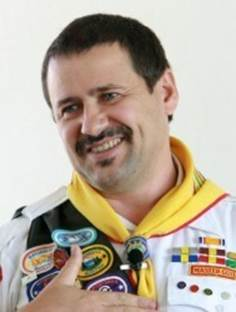

Pastor: Jonatán Tejel Subirada
Jonatán Tejel es el 7mo director de Conquistadores de la Conferencia General de la Iglesia Adventista del Séptimo día. Es hijo de Andrés y Josefina Tejel. Como es común para muchos PKs (hijos de pastores), la familia se mudó con frecuencia hasta que se instaló en Madrid, España, donde pasó sus años adolescentes.
Él fue bautizado por su padre, el pastor Andrés Tejel, el 26 de diciembre de 1981. En 1990 comenzó sus estudios en Teología en el Colegio Adventista de Sagunto. Asistió a esta Institución en los tres primeros años y luego pasó a Collonges (Francia), donde completó sus estudios en Teología en 1995.
En 1992 obtuvo un certificado oficial como coordinador de actividades de tiempo libre, un título que sólo se concede por el Departamento de Educación del Gobierno español.
Está casado con Daniela Sciarabba. Ellos son los padres de dos hijas, Astrid, nacida en 1999 y Edera, nacida en 2001.
Jonatán Tejel cuenta con más de doce años de experiencia como director de ministerio juvenil, habla cuatro idiomas (español, italiano, inglés y francés), y fue el creador y editor de Conexión, una revista juvenil de ministerios de la Iglesia Adventista en España.
Jonatán disfruta de los deportes como el fútbol, escalada en roca, buceo y le gusta trabajar con computadoras y hacer rompecabezas.
Uno de sus versículos favoritos de la Biblia es Isaías 40:30-31. Los muchachos se fatigan y se cansan, los jóvenes flaquean y caen; pero los que esperan en Jehová tendrán nuevas fuerzas. Levantarán alas como las águilas, correrán y no se cansarán, caminarán y no se fatigarán.